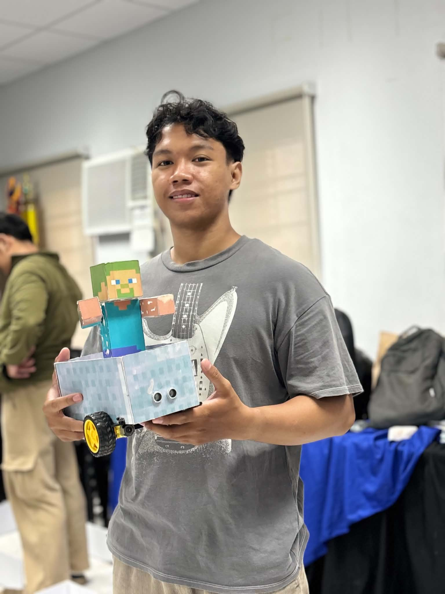
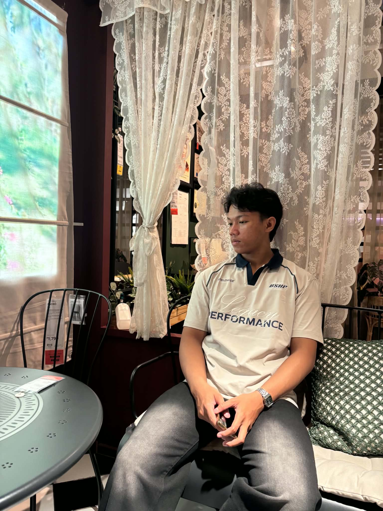
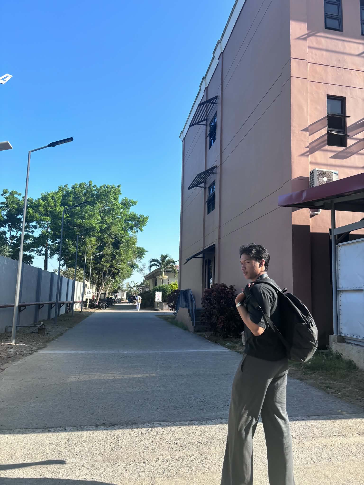
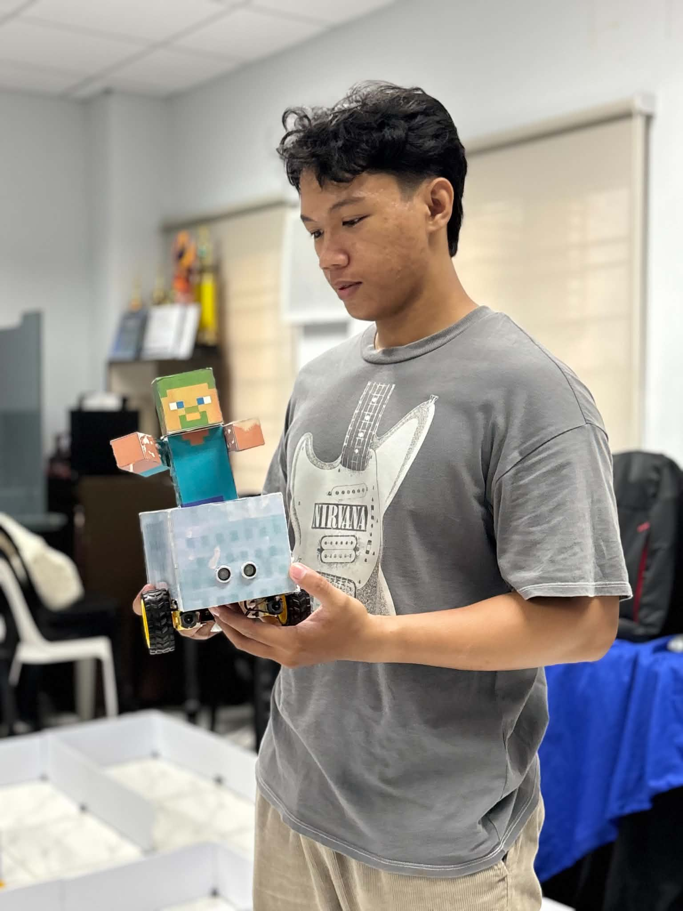

Aspiring Full Stack Developer
Myke Lhowelle Marundan
About
LEARNING. BUILDING. IMPROVING. ASPIRING TO BECOME A FULL-STACK DEVELOPER.




I'm a third-year Computer Engineering student at the University of Batangas, Lipa Campus. The first thing I really built was a booking website and seeing something I made work in the real world is what hooked me.
I enjoy building projects and seeing my ideas come to life. Watching something I've worked on function the way I intended is what motivates me to keep learning and improving. I have a strong interest in full-stack development, IoT, and AI, and I'm always looking for ways to improve my skills in these areas.
I like learning how things work under the hood, then building things that actually run: web apps, hardware, and AI experiments. After graduating, I'm aiming to be a full-stack developer, with my career leaning into AI because that's where the industry is going.
Skills
- Python
- Java
- C++
- JavaScript
- PHP
- HTML
- CSS
- MySQL
- FusionCAD
Certification
- Cisco CCNA 1 & 2
Education
- BS Computer Engineering — University of Batangas, Lipa Campus · 2023–Present
- Tanauan Institute Inc. — With Honors, Grades 11–12 · 2018–2023
Things I use
- AI · tools & learning
- VS Code · daily coding
- LM Studio · used in sentryCORE
- GitHub · version control
- Arduino IDE · used for MazeBot
Building web, hardware, and AI projects that actually work
Live — dot-matrix cam
The kind of real-time effect I build in TouchDesigner, recreated in the browser. Runs entirely on your device, nothing is recorded or uploaded.
Selected Projects